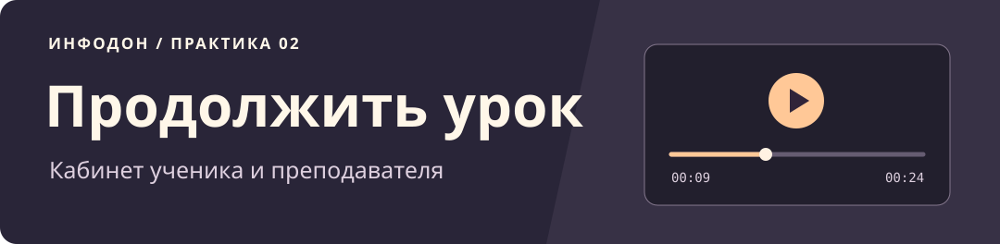

ПРОВЕРКА СТАРТОВЫХ МАТЕРИАЛОВ
Кабинет онлайн-школы
Эта страница нужна для проверки исходных материалов. Включите ролик и попробуйте перемотать его. Сценарии вашего кабинета описаны в README.md.
Учебные данные не загружены. Проверьте, что рядом со страницей есть fixtures.js.